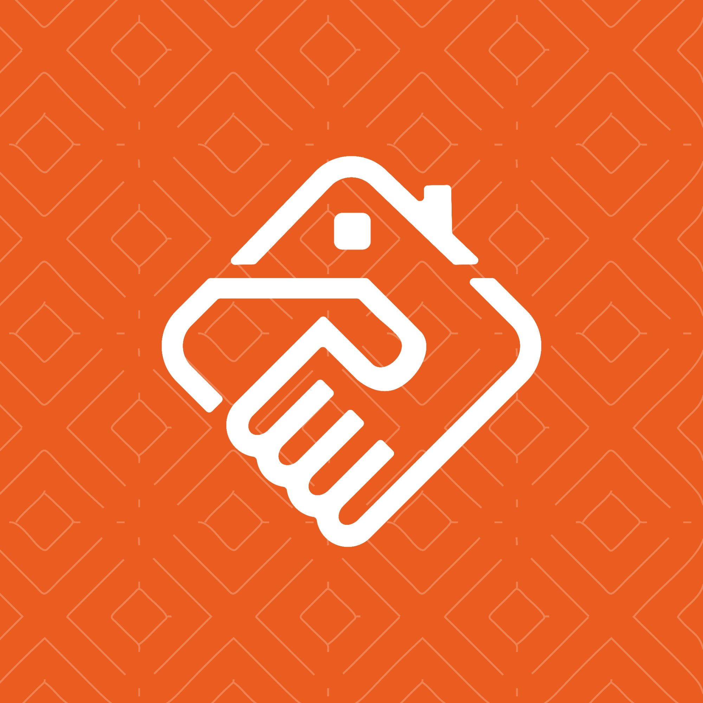

從產品助理到前端工程師，
我用產品思維寫程式，讓每個功能都真正解決使用者的問題。
我的職涯始於產品專案助理。在蘿蔔科技的前七個月，我負責協助 PM 測試 App 功能、撰寫測試報告與使用者手冊，同時使用 Figma 與 Adobe XD 繪製介面。
這段期間讓我建立了對軟體從需求到落地的完整流程的理解——從需求釐清、介面設計、功能測試到最終交付，每一個環節如何串連、如何影響產品品質，都在這段經歷中扎下了根基。
在產品助理的經歷讓我對「技術開發」產生了強烈好奇，更想親手解決問題。於是我開始學習 Flutter 開發，並在同一間公司正式轉職為前端工程師。
我是一個積極擁抱技術變革的開發者。目前我熟練運用 Cursor 與 Claude Code 等 AI 工具輔助程式碼撰寫、單元測試與除錯，這讓我能以更高效率產出穩定、可維護的代碼。
對我來說，AI 不只是加速器，更是思考的夥伴——它幫助我更快驗證想法、更精準地分析需求，讓我能把更多時間花在真正需要判斷力的地方。

「管好房」是一款為不動產包租代管租賃公司客戶設計的 App，服務對象為該客戶內部的業務、管理者、房東、房客。主要想解決的問題是減少業務、房東、房客三方間的溝通成本、合約管理與租金繳納等痛點。我負責接手前任開發者的架構，進行全面重構——從功能模組、使用者操作流程（User Flow）到 UI 介面，都重新設計與實作，最終完成雙平台上架。
使用 Flutter 進行跨平台開發，狀態管理從原有的 GetX 重構為 BLoC，提升架構的可測試性與關注點分離。
使用 Firebase Authentication 實作使用者身分驗證功能，處理登入、註冊與權限管理流程。同時串接 Firebase Cloud Messaging (FCM) 實現推播通知，讓使用者即時接收合約、租金等重要訊息。
串接該公司既有的內部系統，透過 RESTful API 取得與處理資料，實現 App 與後台的即時數據互動。
為一間潛水業者打造的內部工具。該業者使用 TimeTree 進行內部排班管理，但 TimeTree 無法直接匯出排班資料。此工具的目的是將 TimeTree 的排班資料同步並匯出為 CSV 檔，方便業者計算薪資。
前端介面開發，提供同步觸發、時間範圍篩選、CSV 匯出下載與匯出歷史查詢功能。
Node.js 後端部署於 GCP Cloud Run，負責代理呼叫 TimeTree 內部 API 並將資料同步至資料庫。前端靜態檔案託管於 Firebase Hosting。
使用者認證（Supabase Auth）、事件資料儲存（PostgreSQL）、Row Level Security 確保資料隔離。